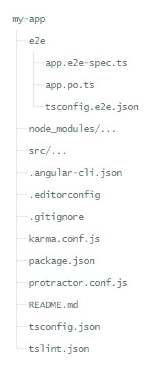
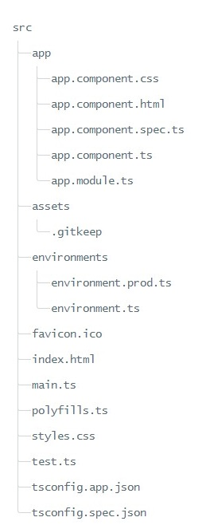

[Angular] 使用 Angular CLI 建立 Angular 專案架構說明
從頭建立 Angular 專案是一件很麻煩的事情，所以通常都會用 Angular CLI 建立 Anuglar 專案，而今天則要說明 Angular CLI 建立 Angular 專案的檔案內容。
建立專案
首先我們要執行 cmd 指令 ng new my-app 建立 Angular 專案，Angular CLI 會幫我們建立這樣專案架構的專案
Structure
The root folder
負責放支援建置 app 的設定檔
| 檔案 | 說明 |
|---|---|
| e2e/ | 負責放 End-to-End 測試程式碼的資料夾 |
| node_modules/ | Node.js 建立的資料夾，負責放 third party modules 的資料夾，其 thrid party modules 清單則放在 package.json裡面 |
| .angular-cli.json | 放 Angular CLI 的設定檔 Angular CLI Config Schema |
| .editorconfig | 幫助開發者使用不同的 IDEs 保持檔案格式一致性的設定檔 |
| .gitignore | Git 的設定檔，讓指定檔案不會 commit 到 Source control |
| karma.conf.js | Karma test 的 unit tests 設定 Karma |
| package.json | npm 設定檔， third party 清單與版本資訊 |
| protractor.conf.js | Angular end-to-end test framework Protractor 設定檔 |
| README.md | Angular CLI 基本指令文件 |
| tsconfig.json | TypeScript 編譯器設定檔案 |
| tslint.json | 保持 code style 一致性的 TSLint 設定檔 |
The src folder
寫程式碼的地方。 所有的 Angular components, templates, styles, images 等等…都放這邊。
Src
| 檔案 | 說明 |
|---|---|
| app/app.component.{ts,html,css,spec.ts} | 所有的 Componet、Service、Pipe、Unit test 等等..程式碼都是放在這個資料夾，而 app.component 則是 Angular CLI 預設建立的 root component |
| app/app.module.ts | 預設的 root module ， 告訴 Angular 有哪些 Components 、Modules、 Services，讓 Angular 知道如何 assemble the application |
| assets/* | 放圖片或者是建立 application 需要用的到材料 |
| environments/* | 設定 Angular 程式碼會用到的參數，很像 Web.config 的東西。 預設為 environment.ts ， 要產生不同的 environment 的話，參考命名規則為 environment.xxx.ts，在執行或者 build Angular application 的時候加入 xxx 的參數，則可以指定到該 environmnet ，例如 : ng build -xxx、 ng serve -xxx |
| favicon.ico | 網頁頁籤的 icon |
| index.html | 網頁進入點，當使用者拜訪網站的時候，是執行到這個頁面。 在大部分的情況，是不需用編輯的， Angular CLI 在 build application 的時候會自動加入 js 和 css |
| main.ts | 啟動 application root module(AppModule) 的編譯起始點 |
| polyfills.ts | 因為不同的瀏覽器會支援不同的 web standards， polyfills 就像補丁的概念，補足些沒有支援的部分。 Browser Support |
| styles.css | 放置 global styles 的 CSS |
| test.ts | unit tests 的進入點，有些 unit tests 的設定也寫在這邊 |
| tsconfig.{app,spec}.json | TypeScript 編譯設定檔 ，tsconfig.app.json for Angular app、 tsconfig.spec.json for unit tests |


{kind=link}
{kind=link}
{kind=link}